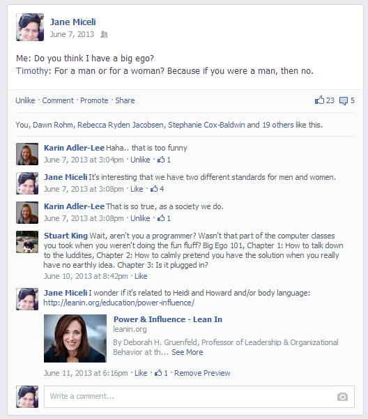

##Technically Gender:
Gender & Technology
janemiceli.github.io/technicallygender
By Jane Miceli
#The source
git clone github.com/janemiceli/technicallygender
git checkout 2014Fall
If you really
I am a software engineer
Bachelor's (2004) and Master's (2008)
in Computer Science
##Work History (2002 - Present)
Test Automation Engineer
/ Firmware Engineer
/ Quality Assurance Engineer
/ Software Engineer
 / Software Engineer
/ Software Engineer
/ Software Development Engineer
##What is Gender?
#the state of being male or female
(typically used with reference to
#social and #cultural differences
rather than #biological ones)
Succinctly
# Sex are the organs you have
## Orientation is who you are interested in
### Gender is who you go to bed as
#Are you biased?
http://www.understandingprejudice.org/iat/genframe.htm
#I am biased
(...And I took it 10 times)
Does it matter we are biased?
Interactive Video
https://www.youtube.com/watch?v=kOjNcZvwjxI
 Question:
Question:
Are women only gym hours sexist?
Question:
Does technology have a gender?
Question:
Do women want to be in tech industry?
Question:
Are women analytical?
Question:
Do men and women have different brains?
Something that really resonates with me:
Video
History
Documentary that's coming out
External messages are internalized
Difference between Gender Equality and Gender Equity
"Gender
equality
requires equal enjoyment by women and men
of socially-valued goods, opportunities, resources and rewards."
"Gender
equity
is the process of being fair to women and men." (UNFPA)
Woman have equality: What else is there to do?
“Parity” versus “Equity”o
definition of pay “parity”:
par·i·ty 1 (pr-t)
n. pl. par·i·ties
1. Equality, as in amount, status, or value.
Here’s the definition of pay “equity”:
n. eq·ui·ty 1
1. a: justice according to natural law or right ;
specifically : freedom from bias or favoritism
b:something that is equitable
4 basic patterns of gender bias
Prove it Again!
The Double Bind
The Maternal Wall
Gender Wars
Prove it Again!
When women have to work twice as hard to get half as far
Match the 3 videos that may have bias?
[subtle || severe || no]
The Double Bind
When women must choose between being liked and being respected
Match the 3 videos that may have bias?
[subtle || severe || no]
The Maternal Wall
When mothers are assumed to be incompetant and uncommitted
Match the 3 videos that may have bias?
[subtle || severe || no]
Gender Wars
When gender bias turns into conflicts among women
Match the 3 videos that may have bias?
[subtle || severe || no]

Question:
Do we have bias in our language?

“In simple terms, the GRE is a better indicator
of sex and skin color
than of ability and ultimate success,”
wrote the authors.
 We say one, thing, we do another
We say one, thing, we do another
 So what can we do?
Mindset
So what can we do?
Mindset
Question
What do you think makes for a good leader?
Watch the numbers:
https://medium.com/@triketora/where-are-the-numbers-cb997a57252
https://github.com/triketora/women-in-software-eng
Contact me at:
#Jane Miceli
##jane@janemiceli.com
###http://www.janemiceli.com
##https://www.linkedin.com/in/janemiceli
https://github.com/janemiceli